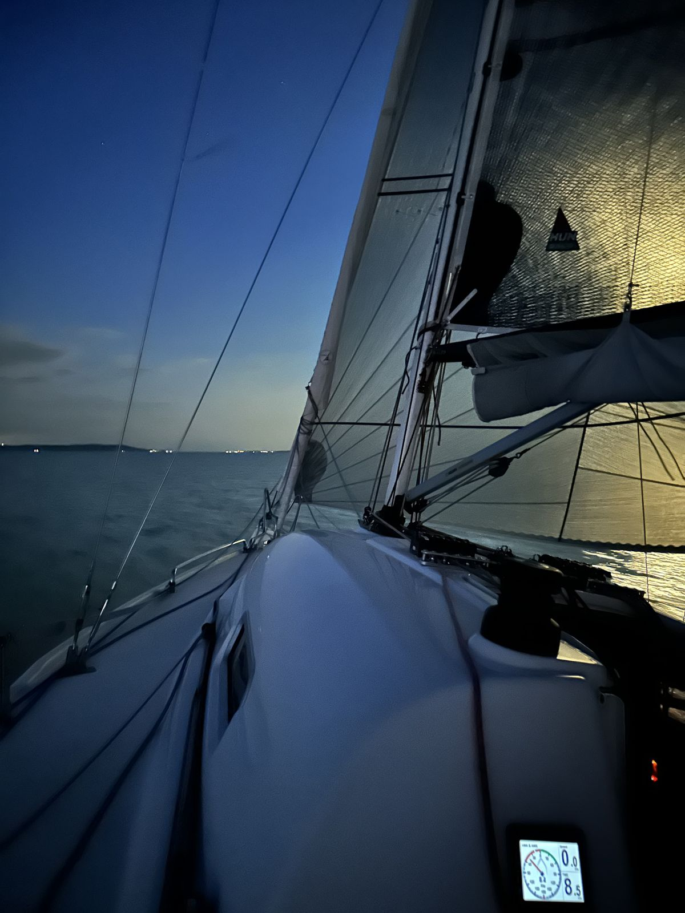
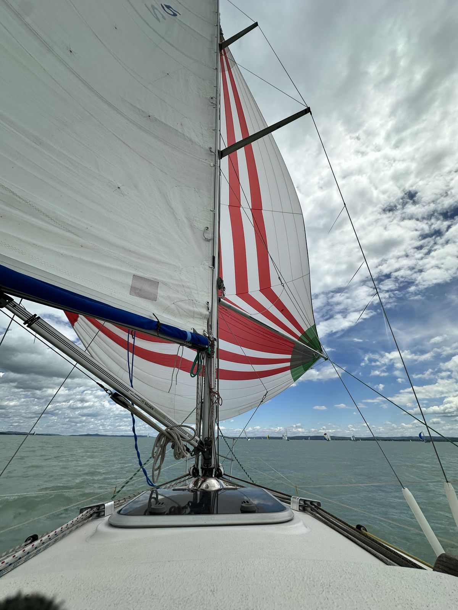
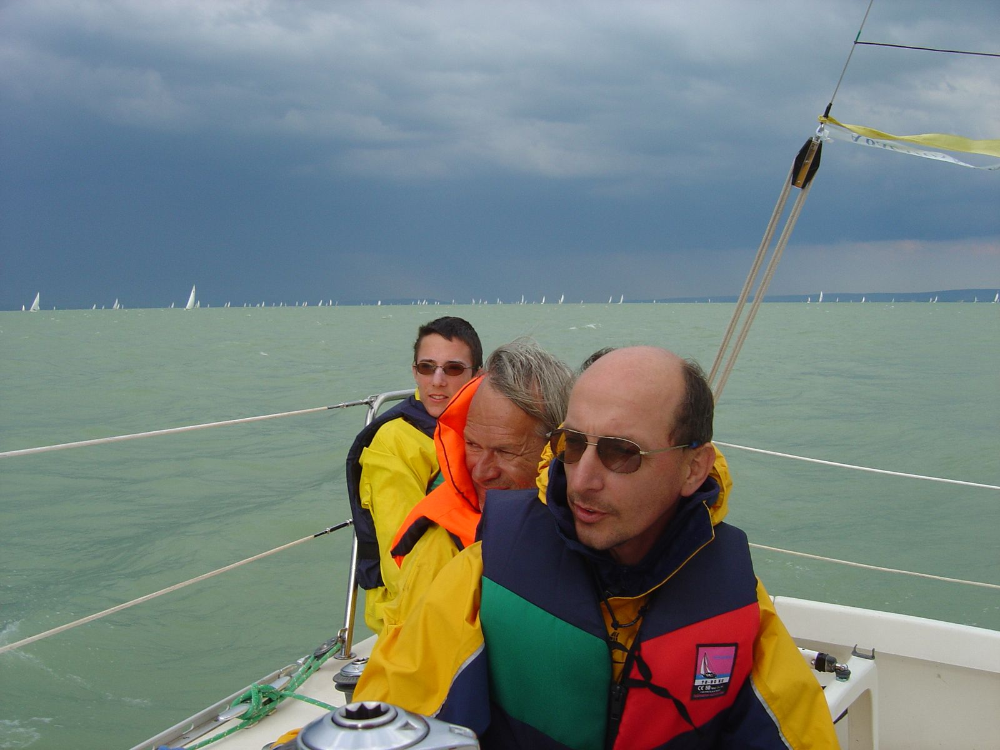
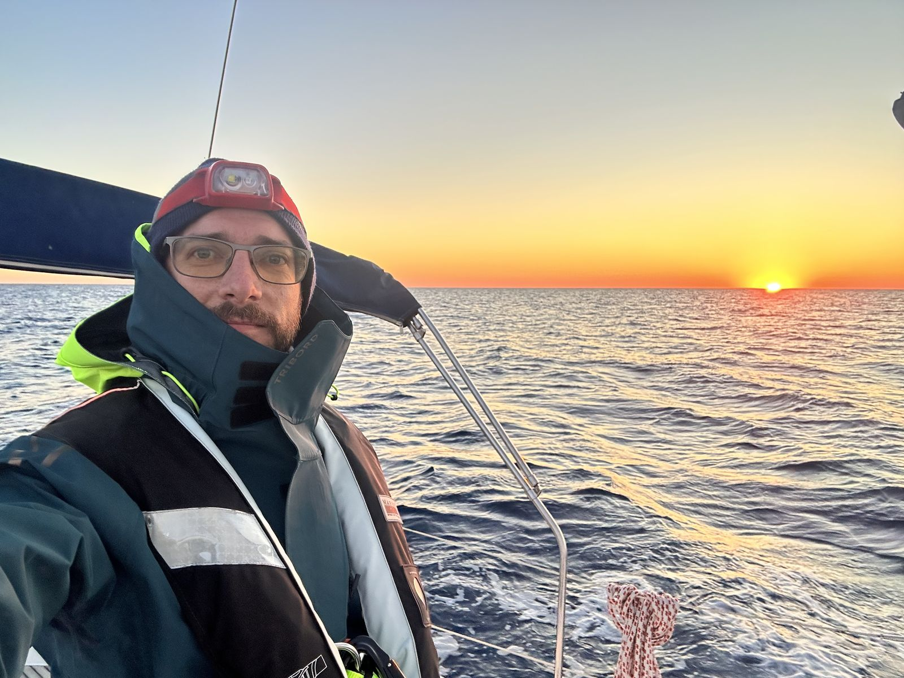
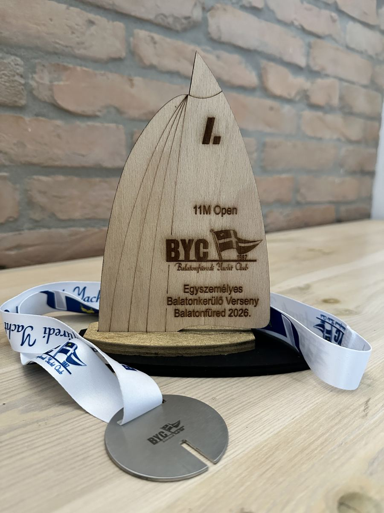
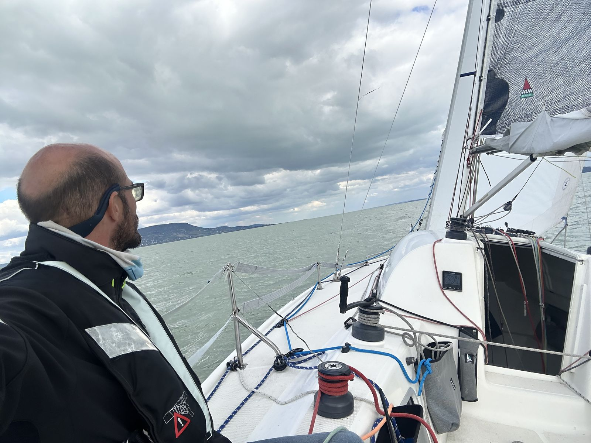
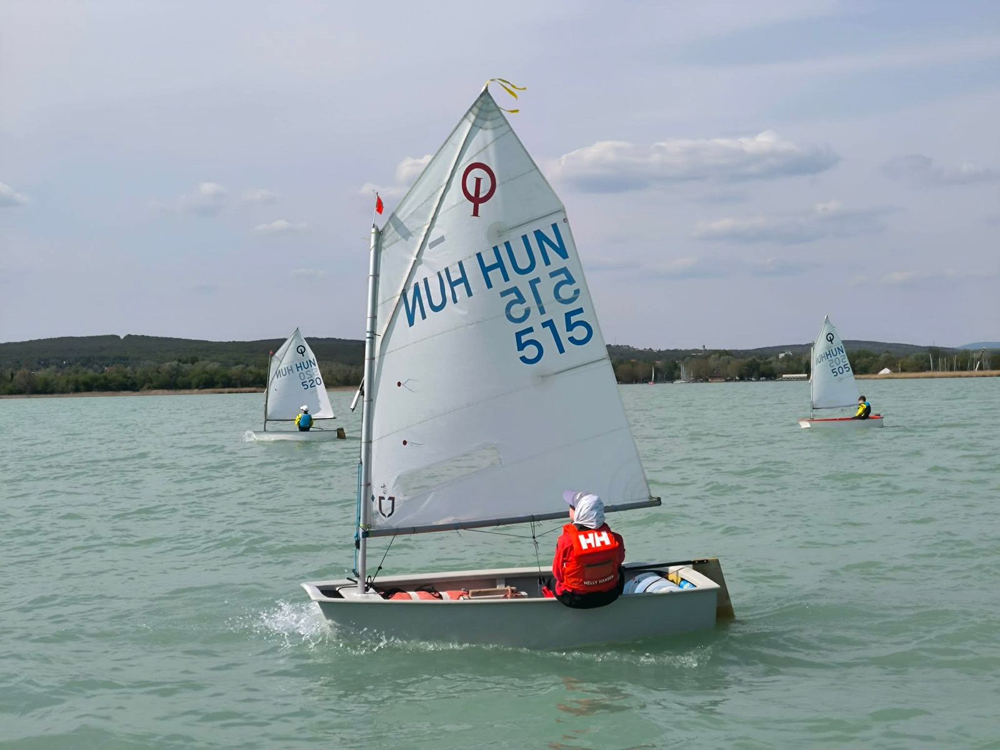

NB Sailing · Budapest
Nagy BenedekBenedek Nagy
Ötgyerekes apuka, aki a Balatonon versenyez. Father of five, racing on Lake Balaton.
A vitorlázás gyerekkorom óta velem van. Komolyan versenyzem, de a család az első, és ez így van jól.
Sailing has been with me since childhood. I race seriously, but my family comes first.

TörténetStory
A vízen nőttem felI grew up on the water
Mióta az eszemet tudom, édesapámnak volt hajója. A nyaraimat kisgyerekként egy Rebell Seaskip MKII-n töltöttem.
For as long as I can remember, my father had a boat. I spent my childhood summers on a Rebell Seaskip MKII.
Tizennégy éves voltam, amikor megérkezett az Aiolos, édesapám Elan 295-öse. Azóta versenyzem vele a Balatonon, Yardstick II-ben, majd ORC-ben: húsz éve, évente öt-hat verseny — Évadnyitó, Mihálkovics Kupa, Kékszalag, Félsziget-kerülő, Köd Kupa, Csillagtúra. Mindegyik versenyen álltunk már a dobogó szinte minden fokán.
I was fourteen when Aiolos arrived, my father’s Elan 295. I’ve been racing her on Lake Balaton ever since, in Yardstick II and then in ORC: twenty years, five or six races a season — the Évadnyitó, the Mihálkovics Cup, the Kékszalag (Blue Ribbon, the classic race around the lake), the Félsziget-kerülő, Köd Kupa and Csillagtúra. We’ve stood on almost every step of the podium at every one of them.
Az Aiolos csapatával nyertünk már Kékszalagot YS II-ben, ORC-ben pedig másodikok és harmadikok is lettünk. A YS II országos bajnokságon másodikok voltunk. A hajót édesapámmal évek alatt ismertük ki, és ez minden eredményben benne van.
With the Aiolos crew we have won the Kékszalag in YS II, and finished both second and third in ORC. We were also second at the YS II national championship. My father and I spent years learning that boat, and it shows in every result.


Néhány éve beszálltam a Stalker csapatába, Hodász Gábor Nautic 311-esére.
A few years ago I joined the Stalker team, Gábor Hodász’s Nautic 311.
2026 tavaszán egy hetet az Adrián hajóztunk Méder Áronnal egy Beneteau Oceanis 391-esen: Milnából (Brač) áthajóztunk Bariba, onnan északnak az olasz part mentén, majd Viestéből vissza Milnába. A következő lépés a szóló és a nyílt vízi vitorlázás.
In spring 2026 I spent a week on the Adriatic aboard a Beneteau Oceanis 391, sailing with Áron Méder among others: from Milna, on Brač in Croatia, across to Bari, then north along the Italian coast, and from Vieste back across to Milna. Next up: solo and offshore sailing.

EredményekResults
Válogatott eredményekSelected results
Válogatás az elmúlt évekből.
A selection from recent years.
-
BYC Egyszemélyes Balatonkerülő, 2026BYC Single-handed Round Lake Balaton, 2026
1. hely · 11 m Open1st · 11 m Open- 1. hely, 11 m Open kategória1st in the 11 m Open class
- 5. hely abszolútban a 14 hajós mezőnyből5th overall in a fleet of 14
-
53. Kékszalag53rd Kékszalag
ORC 2. helyORC 2nd -
Kékszalag Port évadzáró, 2024Kékszalag Port season closer, 2024
Nautic 2. helyNautic 2nd -
Svert Kupa, Flying Dutchman
1. hely, 20211st, 2021 2. hely, 20202nd, 2020 3. hely, 20193rd, 2019

2026 · BYC
Egyedül a Balaton körülAlone around Lake Balaton
1. hely, 11 m Open · 5. abszolút a 14 indulóból · Stalker, Nautic 3111st, 11 m Open · 5th overall of 14 · Stalker, Nautic 311

Család és a következő generációFamily and the next generation
Ami a versenyzésnél is fontosabbWhat matters more than racing
Házas vagyok, öt gyerek apja. A feleségem nélkül egyetlen verseny sem jönne össze: ő tartja egyben az otthont, gyakran akkor is, amikor a család két vitorlázója egyszerre van távol.
I’m married with five kids. None of this happens without my wife: she holds everything together at home, often while both sailors in the family are away at once.
2021-ben, a Svert Kupa győzelmekor a lányom is a hajón volt — akkor négyéves volt. Az olimpiai bronzérmes Érdi Mária akasztotta a nyakunkba az aranyérmet. Azóta Érdi Mária a példaképe. 2026-ban megvolt az első Optimist-szezonja.
In 2021, when we won the Svert Cup, my daughter was on board — she was four. Olympic bronze medallist Mária Érdi hung the gold medals around our necks, and she’s been my daughter’s role model ever since. In 2026 she finished her first season racing Optimist.

Versenynaptár 20272027 race calendar
A 2027-es tervThe 2027 season
Tervezett versenyek. A dátumokat akkor írom ki, ha már hivatalosak.
Planned starts. I’ll add dates once they’re official.
- Évadnyitó Season opener
- Mihálkovics Kupa Mihálkovics Cup
- Kékszalag
- Félsziget-kerülő
- Köd Kupa
- Csillagtúra
- BYC Szóló BYC Solo
- Klasszikus Szóló (Aiolos) Classic Solo (Aiolos)
- Négykezes Double-handed
EszközökTools
Balatoni útvonaltervezésRouting on Lake Balaton
A Balatonra készítettem néhány útvonaltervezőt: polarok, különböző routing-elvek, és egy előrejelzéses izokrón router. Szabadon használhatók, próbáld ki.
I build routing tools for Lake Balaton: polars, different routing approaches, and a forecast-based isochrone router. Free to use. Give them a try.
-
Balaton Polar Router
Átlagszél, mohó VMG.
Average wind, greedy VMG.
Megnyitás →Open → -
Balaton Polar Router
Átlagszél, A-gráf.
Average wind, A-graph.
Megnyitás →Open → -
Balaton Polar Router
70% átlagszél, 30% pöff, A-gráf.
70% average wind, 30% gust, A-graph.
Megnyitás →Open → -
Balaton forecast routing
Előrejelzésre épülő izokrón útvonaltervező.
A forecast-based isochrone router.
balatonrouting.hu →
Instagram, videó, kapcsolatInstagram, video, contact
Ha követnéd, merre járokFollow along
Az NB Sailing Instagram-fiókon a versenyek és a tó körüli hétköznapok vannak.
Races and everyday life on the lake, on the NB Sailing Instagram.
NB Sailing az Instagramon NB Sailing on Instagram